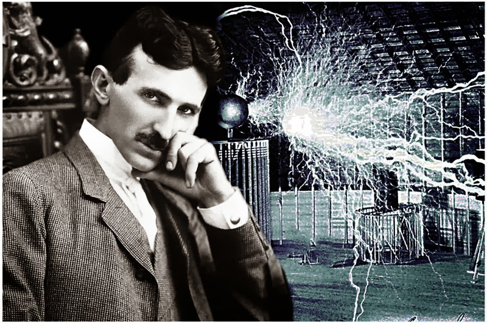

Nikola je rođen 28. juna 1856. godine po starom, odnosno 10. jula po novom kalendaru u Smiljanu u Lici, kao četvrto dete od petoro dece Milutina, srpskog pravoslavnog sveštenika, i majke Georgine, u Vojnoj krajini Austrijskog carstva nedaleko od granice sa Osmanskim carstvom. Kršten je u srpskoj pravoslavnoj Crkvi Sv. Petra i Pavla u Smiljanu. Ime Nikola je dobio po jednom i drugom dedi. Dete je bilo bolešljivo i slabo pa su krštenje zakazali mimo običaja, sutradan, bojeći se da neće preživeti. Krštenje deteta obavio je pop Toma Oklopdžija u crkvi Svetog Petra i Pavla u Smiljanu, a kum je bio Milutinov prijatelj, kapetan Jovan Drenovac. U crkvenim knjigama je zapisano crkvenoslovenski da je dete dobilo ime Nikolaj, a zapravo je dobilo ime po jednom i drugom dedi Nikola. Nikolin otac je bio nadareni pisac i poeta koji je posedovao bogatu biblioteku u kojoj je i Nikola provodio svoje detinjstvo čitajući i učeći strane jezike. Po jednom verovanju, Tesle vode poreklo od Draganića iz Banjana. Po navodima Jovana Dučića, Tesle su poreklom iz Stare Hercegovine, od plemena (Oputni) Rudinjani iz sela Pilatovaca u današnjoj nikšićkoj opštini. Međutim, o Teslinom poreklu postoji i verzija da su od Komnenovića iz Banjana u Staroj Hercegovini. Po legendi koja se zadržala u Banjanima, Komnenovići su zidali crkvu prilikom čega su se posvađali sa majstorima usled čega je došlo do krvavih obračuna. Kao rezultat toga, deo Komnenovića se preselio sa Tupana u drugi kraj Banjana zbog čega su ih prozvali Čivije (ekseri) koji i danas žive u Banjanima, dok se drugi deo odselio u Liku koji je prozvan Tesla po tesli, vrsti tesarskog alata. Nikolina majka bila je vredna žena s mnogo talenata. Bila je vrlo kreativna i svojim izumima olakšavala je život na selu. Smatra se da je Nikola Tesla upravo od majke nasledio sklonost ka istraživačkom radu. Teslini roditelji su, osim njega, imali sina Daneta i kćerke Angelinu i Milku, koje su bile starije od Nikole, i Maricu, najmlađe dete u porodici Tesla. Dane je poginuo pri padu s konja kad je Nikola imao pet godina i to je ostavilo veliki trag u porodici. Dane je smatran izuzetno obdarenim, dok se za Nikolu verovalo da je manje inteligentan. Veruje se da je Danetova smrt osnovni razlog što otac dugo nije pristajao da mu dozvoli da pohađa tehničku školu daleko od kuće.
Prvi razred osnovne škole pohađao je u rodnom Smiljanu. Otac Milutin rukopoložen je za protu u Gospiću, te se porodica preselila u ovo mesto 1862. godine. Preostala tri razreda osnovne škole i trogodišnju Nižu realnu gimnaziju završio je u Gospiću. U Gospiću je Nikola prvi put skrenuo pažnju na sebe kada je jedan trgovac organizovao vatrogasnu službu. Na pokaznoj vežbi kojoj je prisustvovalo mnoštvo Gospićana, vatrogasci nisu uspeli da ispumpaju vodu iz reke Like. Stručnjaci su pokušali da otkriju razlog zašto pumpa ne vuče vodu, ali bezuspešno. Tesla, koji je tada imao sedam ili osam godina, je instiktivno rešio problem ušavši u reku i otčepivši drugi kraj creva. Zbog toga je slavljen kao heroj dana. Teško se razboleo na kraju trećeg razreda škole 1870. godine. S jeseni je otišao u Rakovac kraj Karlovca da završi još tri razreda Velike realke. Maturirao je 24. jula 1873. godine u grupi od svega sedam učenika sa vrlo dobrim uspehom jer je iz nacrtne geometrije bio dovoljan. Tada je imao 17 godina. Nakon završene mature vratio se u Gospić i već prvi dan razboleo od kolere. Bolovao je devet meseci. U tim okolnostima uspeo je da ubedi oca da mu obeća da će ga umesto na bogosloviju upisati na studije tehnike. Studije
Tesla je, 6. juna 1884. godine, došao u Ameriku u Njujork sa pismom preporuke koje je dobio od prethodnog šefa Čarlsa Bečelora. U preporuci je Bečelor napisao: „Ja poznajem dva velika čoveka, a vi ste jedan od njih; drugi je ovaj mladi čovek”. Edison je zaposlio Teslu u svojoj kompaniji Edisonove mašine. Tesla je ubrzo napredovao i uspešno rešavao i najkomplikovanije probleme u kompaniji. Tesli je ponuđeno da uradi potpuno reprojektovanje generatora jednosmerne struje Edisonove kompanije.
Pošto je Tesla opisao prirodu dobitaka od njegove nove konstrukcije, Edison mu je ponudio 50.000$ (1,1 milion $ danas)kad sve bude uspešno završeno i napravljeno. Tesla je radio blizu godinu dana na novim konstrukcijama i Edisonovoj kompaniji doneo nekoliko patenata koji su potom zaradili neverovatan profit. Kada je potom Tesla pitao Edisona o obećanih 50.000$, Edison mu je odgovorio „Tesla, vi ne razumete naš američki smisao za humor.”. i pogazio svoje obećanje. Edison je pristao da poveća Teslinu platu za 10$ nedeljno, kao vrstu kompromisa, što znači da bi trebalo da radi 53 godine da zaradi novac koji mu je bio prvobitno obećan. Tesla je dao otkaz momentalno. Edison je kao dobar biznismen zarađivao novac korišćenjem svojih jednosmernih generatora struje koji su bili veoma skupi za postavljanje i održavanje. Bilo je potrebno i po nekoliko stanica jednosmerne struje da bi se obezbedila jedna gradska četvrt, dok je Teslin generator naizmenične struje bio dovoljan za snabdevanje kompletnog grada. Uvidevši efikasnost Teslinih patenata, Edison je koristio razne načine da uveri javnost kako je ta struja opasna, hodao je po gradskim vašarima i pred medijima naizmeničnom strujom usmrćivao životinje (pse, mačke, i u jednom slučaju, slona).Na njegovu ideju stvorena je i prva električna stolica. Kao odgovor tome Tesla se priključio u kolo naizmenične struje što je prouzrokovalo užarenje niti električne sijalice, i tim pobio predrasude štetnosti naizmenične struje.